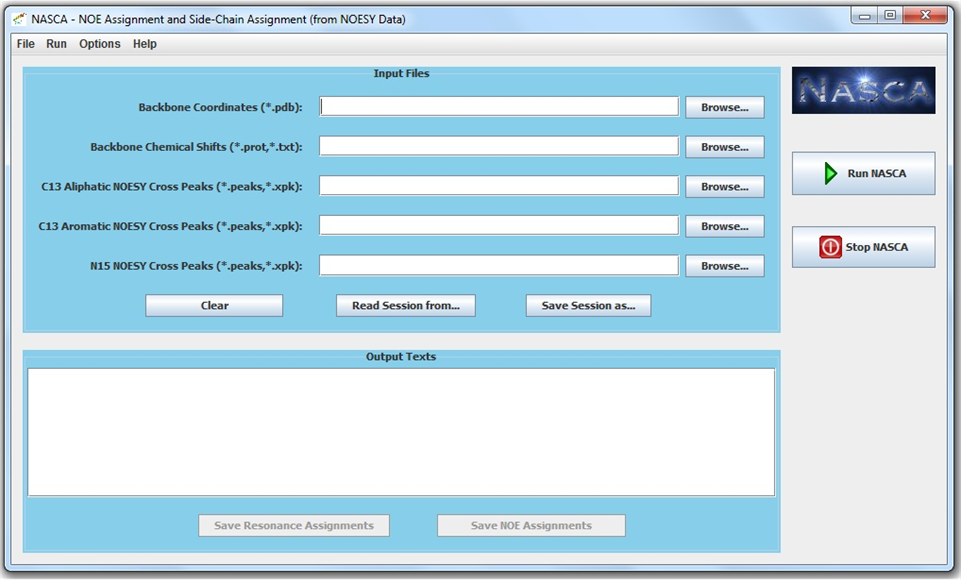

RDC-PANDA is a suite of programs for nuclear Overhauser effect (NOE) assignment and high-resolution structure determination starting with a global fold calculated from exact solutions to the residual dipolar coupling (RDC) equations. RDC-PANDA is free software and distributed open-source under the GNU Lesser General Public License (Gnu, 2002). The binary executable files, source code and documents of RDC-PANDA can be downloaded here.
Related Papers:
Jianyang Zeng, Kyle E. Roberts, Pei Zhou, Bruce R. Donald. A Bayesian Approach for Determining Protein Side-Chain Rotamer Conformations Using Unassigned NOE Data. Journal of Computational Biology. 2011.
Chittaranjan Tripathy, Jianyang Zeng, Pei Zhou, Bruce R. Donald. Protein Loop Closure using Orientational Restraints from NMR Data. Proteins: Structure, Function, and Bioinformatics. 2011.
Jianyang Zeng, Kyle E. Roberts, Pei Zhou, Bruce R. Donald. A Bayesian Approach for Determining Protein Side-Chain Rotamer Conformations Using Unassigned NOE Data. International Conference on Research in Computational Molecular Biology (RECOMB'11). Vancouver, 2011.
Chittaranjan Tripathy, Jianyang Zeng, Pei Zhou, Bruce R. Donald. Protein Loop Closure using Orientational Restraints from NMR Data. International Conference on Research in Computational Molecular Biology (RECOMB'11). Vancouver, 2011.
Jianyang Zeng, Jeffrey Boyles, Chittaranjan Tripathy, Lincong Wang, Anthony Yan, Pei Zhou, Bruce R. Donald. High-Resolution Protein Structure Determination Starting with a Global Fold Calculated from Exact Solutions to the RDC Equations. Journal of Biomolecular NMR. 45(3):265-281. 2009.
Bruce R. Donald and Jeffrey Martin. Automated NMR Assignment and Protein Structure Determination using Sparse Dipolar Coupling Constraints. Progress in Nuclear Magnetic Resonance Spectroscopy, 55(2):101-127, 2009.
Jianyang Zeng, Chittaranjan Tripathy, Pei Zhou, Bruce R. Donald. A Hausdorff-Based NOE Assignment Algorithm Using Protein Backbone Determined from Residual Dipolar Couplings and Rotamer Patterns. Proceedings of the 7th Annual International Conference on Computational Systems Bioinformatics (CSB'08), Stanford CA, pp. 169-181, August 26-29, 2008.
NASCA is an automated program for side-chain resonance assignment and nuclear Overhauser effect (NOE) assignment from NOESY data. It does not require data from TOCSY experiments. NASCA is integrated with a graphical user interface (GUI). NASCA is free software and distributed open-source under the GNU Lesser General Public License (Gnu, 2002). The binary executable files, source code and documents of NASCA can be downloaded here.
Related Papers:
Jianyang Zeng, Pei Zhou, Bruce R. Donald. Protein Side-Chain Resonance Assignment and NOE Assignment Using RDC-Defined Backbones without TOCSY Data. Journal of Biomolecular NMR. 2011.
Jianyang Zeng, Pei Zhou, Bruce R. Donald. A Markov Random Field Framework for Protein Side-Chain Resonance Assignment. International Conference on Research in Computational Molecular Biology (RECOMB'10). Lisbon, Portugal. April, 2010.
